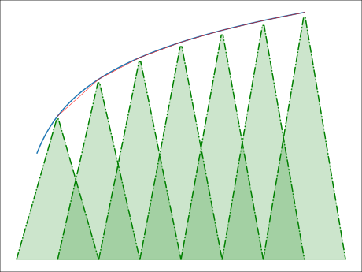
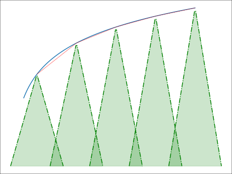
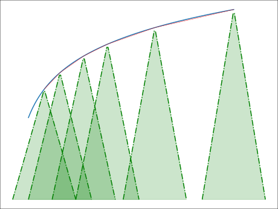
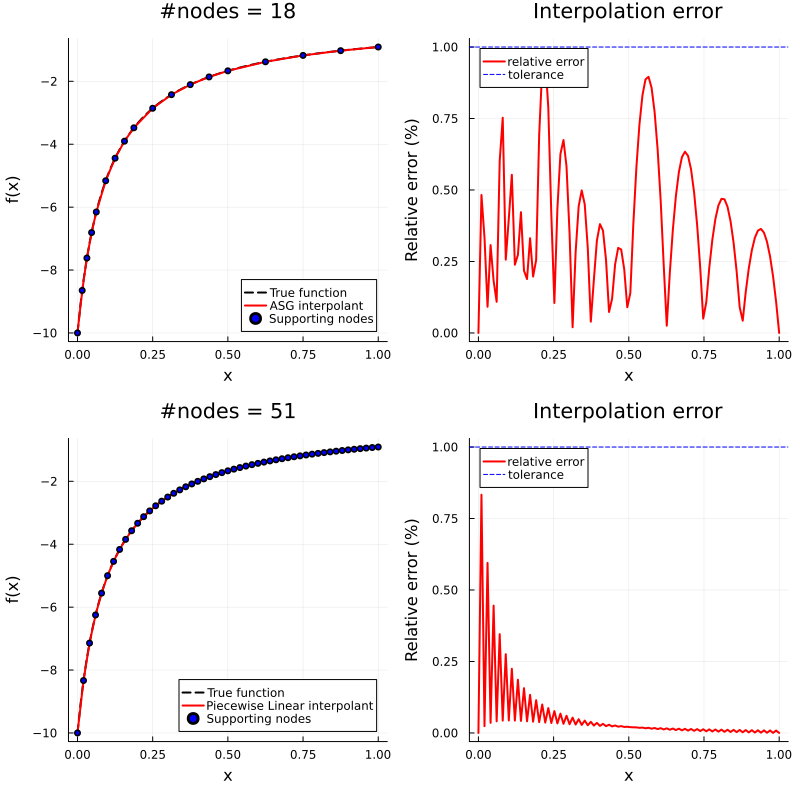
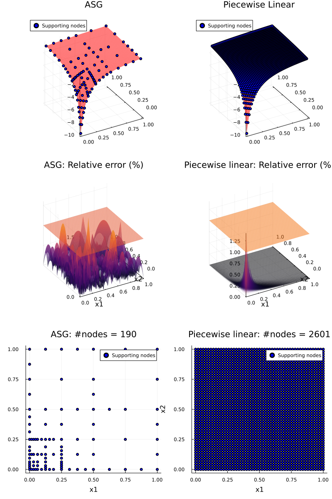
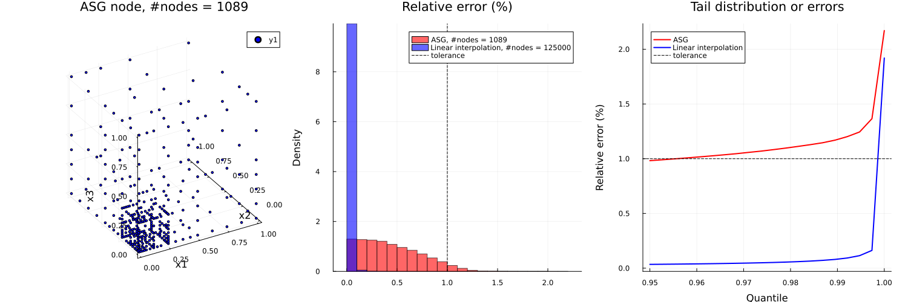
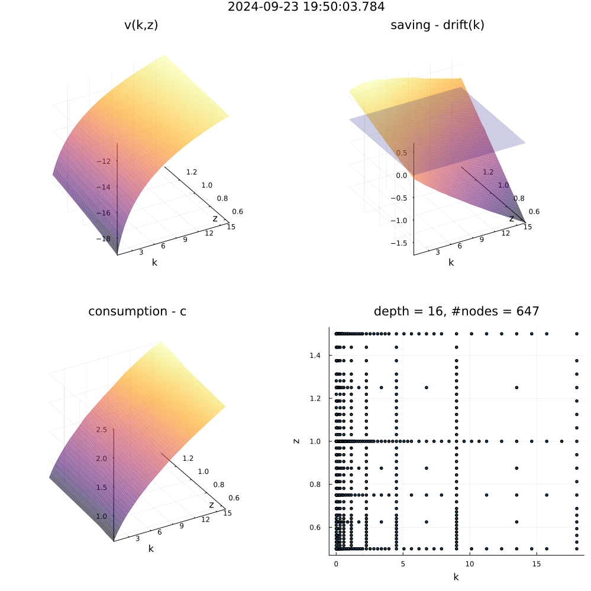

A 15 min tutorial for Adaptive Sparse Grid (ASG)
A 15 min tutorial for Adaptive Sparse Grid (ASG)1. Introduction2. Where do we need ASG?3. General idea4. Algorithm5. Example5.1 Function approximation5.1.1 1D example5.1.2 2D example5.1.3 3D example5.2 HJB equation: stochastic Neo-classical growth model6. Pros & Cons: Choose between ASG, RSG, and dense gridReference
1. Introduction
The curse of dimensionality challenges economists in modeling complex economic dynamics. For instance, a five-state discrete-time lifecycle model might require millions of grid points, with higher-dimensional problems quickly becoming infeasible due to time and memory constraints. In recent decades, numerical methods have been developed to address this issue. Sparse grids, an extension of standard interpolation theory, provide a natural pathway to high-dimensional modeling.
Recent advances in sparse grid theory introduce adaptation, where nodes are added or removed based on the shape of the local function, further reducing the necessary number of interpolation nodes compared to regular sparse grids (RSG). This adaptive sparse grid (ASG) technique proves especially useful in economic research, where value functions often exhibit power law behaviors.
This blog post heuristically introduces the concept of ASG and its algorithm, without delving into the underlying mathematics, to help a broad audience quickly engage with the literature, begin learning, and apply this technique to their research.
2. Where do we need ASG?
In general, ASG works in all scenarios wherever an interpolation or function approximation is needed. Some typical scenarios are:
Lifetime optimization problems, both discrete time and continuous time
High-dimensional non-parametric estimation
Numerical quadrature and other exercises
3. General idea
Let's begin with standard interpolation theory. In this post, we discuss single-valued real functions
Different interpolation methods vary in the design of
Global interpolation
(Global) polynomial interpolation
Spectral method
(Global) spline
Local interpolation
Piecewise polynomial interpolation
Spline
In this post, we discuss multi-dimensional piecewise linear interpolation (also known as multi-linear interpolation). For details on other methods, readers may refer to standard textbooks on numerical analysis. The regular degree-

In the figure, seven evenly spaced hat functions, weighted by interpolation coefficients, "support" the linear approximation (red line) of the target power-law shaped function. Notably:
There are many unnecessary overlaps among the hat functions.
The interpolant (red line) approximates the target function well in regions that behave approximately linearly, while the approximation is less accurate in regions with sharp changes.
For the first observation, one might ask: Given a desirable tolerance of approximation error, is every node necessary?
The answer is no. The following figure demonstrates that we can remove some of the hat functions while maintaining a similar approximation error. Here, the node distribution is "sparse" compared to the original piecewise linear interpolation. The corresponding numerical technique is known as (regular) sparse grid (RSG) theory, which designs generalized interpolation grids for arbitrary target functions. A wide range of methods, such as the Smolyak method, fall within this category.

Regarding the second observation, a relevant question arises: Given a desirable tolerance of approximation error, how can we improve accuracy in regions with sharp changes?
The solution is to use adaptation, i.e., dynamically assigning nodes according to the local shape of the target function. In regions that change sharply, more supporting nodes are allocated; in regions where a linear approximation suffices, fewer supporting nodes are needed. The following figure illustrates how the adaptation procedure enhances approximation accuracy. Notice the concentration of supporting nodes on the left side of the figure, where changes are more abrupt. The spacing between neighboring nodes increases as the function’s shape becomes more linear. Ultimately, the approximation accuracy is excellent throughout the figure.

When combining the sparse grid theory and adaption, we have so-called (multi-linear) Adaptive Sparse Grid (ASG) interpolation. For readers to start learning the literature, here are some important studies:
All theory, proof and math
Schiekofer (1998) - NOTE: This is a long dissertation written in German but it deserves a careful reading if readers want to really master the theory.
Practical algorithm
Schaab & Zhang (2022, SSRN) - TIPS: This paper gives detailed explanation about how to solve a household lifetime problem with ASG.
Garcke & Ruttscheidt (2019) - TIPS: Carefully check this paper if you are working with HANK-style model
Griebel (1998) - TIPS: Check this paper if you want to write your own programs
Applications in economics:
Continuous time
Schaab & Zhang (2022, SSRN)
Garcke & Ruttscheidt (2019)
In general
Brumm & Scheidegier (2017, ECTA) - TIPS: this paper also has a benchmarking that compares the number of nodes of dense grid, regular sparse grid, and ASG
Potential issues, tricks and solutions: Garcke & Ruttscheidt (2019)
If readers need more related works, I would recommend to check the papers by Michael Griebel at the Institute for Numerical Simulation (Institutetut fur Numericalsche Simulation) at University of Bonn, Germany.
Remark: The sparse grid technique, whether RSG or ASG, is generally independent of the specific interpolation methods chosen. It is simply an enhancement of the grid structure. Any numerical method that requires a grid can potentially be adapted to work with sparse grids with minimal modifications. For instance, the paper by Judd et al. (2014) provides an excellent example of combining RSG with the spectral method, a global technique.
4. Algorithm
Given the generic definition in Equation (1), an interpolant
where
Determining the underlying grid structure
Calculating the interpolation coefficients
Evaluation is the process of computing the value of
Remark: In practice, a technique called residual fitting is used for adaptation. This technique modifies the evaluation process, yet it ultimately still aligns with Equation (1). For further details, see Schaab & Zhang (2022).
To define an adaptive algorithm for the training process, we need to design:
The rule for adding or dropping supporting nodes:
What criteria determine whether to add or drop a node?
In the case of adding nodes, how do we identify all candidate nodes to be added?
The formula for calculating interpolation coefficients.
The multi-linear ASG interpolation follows this algorithm:
Initialize the algorithm with one or more essential nodes.
Repeat until the algorithm converges:
For each node
Identify all
For each candidate node:
If the current interpolant (without adding any candidate nodes this round) has a sufficiently small interpolation error at the candidate node, skip this candidate node (since adding it would have minimal impact).
Otherwise, add this candidate node.
If no new candidate nodes are added, the algorithm has converged.
Otherwise, reduce the radius of the spheres and proceed to the next round.
Remark:Bridging the gap between the above algorithm and its programming implementation requires practical considerations. The concept of an
-dimensional sphere is, in practice, implemented through a technique called hierarchical nodes, which establishes a rule for "growing" child nodes and determining the effective radius of these spheres. For more details, refer to Schaab & Zhang (2022).
Remark: It is worth noting that the algorithm only includes a node-adding operation, with no node-dropping operation. This design choice is made to ensure the completeness of the data structure esp. when the algorithm starts from an RSG. Further explanation on this can be found in later sections.
To illustrate the algorithm, consider a 2D function

Standing at the blue "parent" point, examine the distant red "children" nodes located on the dashed-line sphere. Decide which of these nodes to add based on the tolerance criteria.

Assuming all four red candidate children nodes are accepted, designate these four nodes as the new "parent" nodes and proceed with this round of the algorithm.

Let's assume only 3 candidate children nodes are accepted. In this round, reduce the sphere radius and continue the algorithm.

Similarly, assume only 2 children nodes are accepted this round.

Suppose there is no new nodes are accepted around

One can see that the distance between nodes are uneven while some local regions have more nodes than the others.
Remark:
Readers with a computer science background may recognize that the grid structure essentially forms a
-ary tree, and the algorithm described above effectively performs branch pruning. Dropping a non-leaf node disrupts the tree’s connectivity and alters the depth of every other node, making the data structure unpredictable.
For small values of
, a linked list provides maximum flexibility. However, this becomes inefficient as increases. For medium values of , a hash table is recommended (Griebel, 1998), benefiting from strict node hierarchization. For large , hash tables perform poorly due to an increased probability of hash collisions, and in this case, a database can efficiently manage the grid. In most scenarios involving economic models (where
ranges from 1 to 20), a hash table performs effectively.
5. Example
5.1 Function approximation
Here are some numerical example for:
Where
5.1.1 1D example

The first row displays the result of ASG, while the second row shows the result of RPL. It can be observed that, within the given tolerance, ASG uses only 30% as many supporting nodes compared to RPL, while:
The significant interpolation error in RPL mainly occurs in the sharply changing region near the left boundary of
In contrast, the concentration of nodes in other areas results in an "overly accurate" approximation relative to the error tolerance.
ASG, however, achieves a relatively uniform error distribution across
Remark: The poor interpolation accuracy near the lower bound of
can lead to quantitatively significant issues in specific economic research contexts, such as studies on Hand-to-Mouth households or wealth distribution in the Aiyagari model.
5.1.2 2D example

In the two-dimensional scenario, the sparsity advantage of ASG over RPL becomes even more pronounced. In the figure matrix above, the first column displays ASG results, while the second column shows RPL results. Similar patterns emerge as in the one-dimensional case. Here, ASG achieves comparable interpolation accuracy while using only 7.3% as many supporting nodes compared to RPL.
5.1.3 3D example

If we move to the 3-dimensional scenario, the sparsity of ASG relative to RPL becomes even more pronounced. From
Spatial distribution of ASG supporting nodes
Histogram of relative errors, ASG vs. RPL
Tail distribution of relative errors by quantiles, ASG vs. RPL
The spatial distribution of ASG supporting nodes and the histogram of relative errors convey a similar message as in previous scenarios. The new tail distribution figure further illustrates that ASG and RPL have a comparable scale of errors in the most sharply changing regions.
With the same interpolation accuracy, ASG requires only 0.87% as many supporting nodes compared to RPL.
5.2 HJB equation: stochastic Neo-classical growth model
To illustrate the results of applying ASG to practical economic models. I solve the following stochastic Neo-classical growth model which is a standard testing case:
Where:
The TFP shock follows an Ornstein–Uhlenbeck process with mean-reverting coefficient
All parameters are set by convention.
The numerical scheme of finite difference is the quasi-fully implicit scheme used by Benjamin Moll. The solved value function

6. Pros & Cons: Choose between ASG, RSG, and dense grid
ASG offers significant advantages for high-dimensional modeling. However, there is no free lunch. I compare multi-linear interpolation across ASG, RSG (e.g., Smolyak), and dense grid methods to help readers select the most suitable approach for their applications.
Remark: The comparisons presented in the table may vary significantly depending on the interpolation methods used. For example, the time and space complexity of spectral approximation across the three grid types depends solely on the number of supporting nodes.
| ID | Item | ASG | RSG | Dense grid |
|---|---|---|---|---|
| 1 | Time complexity: training | High | Medium | Medium |
| 2 | Time complexity: evaluation | Medium | Medium | Low |
| 3 | Space complexity: RAM during training | High | Medium | High |
| 4 | Space complexity: result storage | Low | Medium | High |
| 5 | Number of supporting nodes | Low | Medium | Very high |
| 6 | Largest feasible dimensionality on personal computer | >40 | >20 | 4 |
| Discrete time macroeconomic models: | ||||
| 7 | - Compatible? | Yes | Yes | Yes |
| Continuous time macroeconomic models: | ||||
| 8 | - Compatible? | Yes | Yes | Yes |
| 9 | - Unconditional monotonicity of implicit method + upwind scheme? | Maybe | Maybe | Yes |
Remark: ASG dynamically grows a tree of nodes where the final, converged set contains relatively few accepted nodes, but the algorithm must trial all possible candidate nodes. These trials account for 99% of the training time. In contrast, RSG determines the node set before performing residual fitting, which generally makes the algorithm faster than ASG. However, for high-dimensional functions, RSG requires significant time to filter through admissible node layers.
Remark: Both ASG and RSG require traversing the entire set of supporting nodes due to the nature of residual fitting. In contrast, a dense grid, in the context of piecewise linear interpolation, only needs to bracket the given point within the state space.
Remark: In the context of solving elliptic/parabolic PDEs using finite difference methods with implicit schemes, Garcke & Ruttscheidt (2019) demonstrate that interpolation methods requiring evaluation of the unknown function at points other than supporting nodes cannot guarantee the monotonicity of the numerical scheme, even when schemes such as the upwind scheme are applied. This limitation arises because the function approximation at these points may not be representable as a convex combination of the supporting nodes, potentially undermining the ellipticity of the approximated PDE under certain parameter values. I discuss this topic further in another blog post.
Question: If I want to use global interpolations such as spectral methods, which type of grid should I use?
Answer: Global methods uses global basis functions which are merely affected by some singular local shapes. However, global methods usually involve solving large dense linear system. Thus, ASG works the best since it mostly reduces the required number of nodes.
Reference
Schaab, A., & Zhang, A. (2022). Dynamic programming in continuous time with adaptive sparse grids. Available at SSRN 4125702.
Brumm, J., & Scheidegger, S. (2017). Using adaptive sparse grids to solve high‐dimensional dynamic models. Econometrica, 85(5), 1575-1612.
Schiekofer, T. (1998). Die Methode der Finiten Differenzen auf d unnen Gittern zur L osung elliptischer und parabolischer partieller Di erentialgleichungen (Doctoral dissertation, PhD thesis, Universit at Bonn).
Garcke, J., & Ruttscheidt, S. (2019). Finite differences on sparse grids for continuous time heterogeneous agent models.
Judd, K. L., Maliar, L., Maliar, S., & Valero, R. (2014). Smolyak method for solving dynamic economic models: Lagrange interpolation, anisotropic grid and adaptive domain. Journal of Economic Dynamics and Control, 44, 92-123.
Griebel, M. (1998). Adaptive sparse grid multilevel methods for elliptic PDEs based on finite differences. Computing, 61, 151-179.